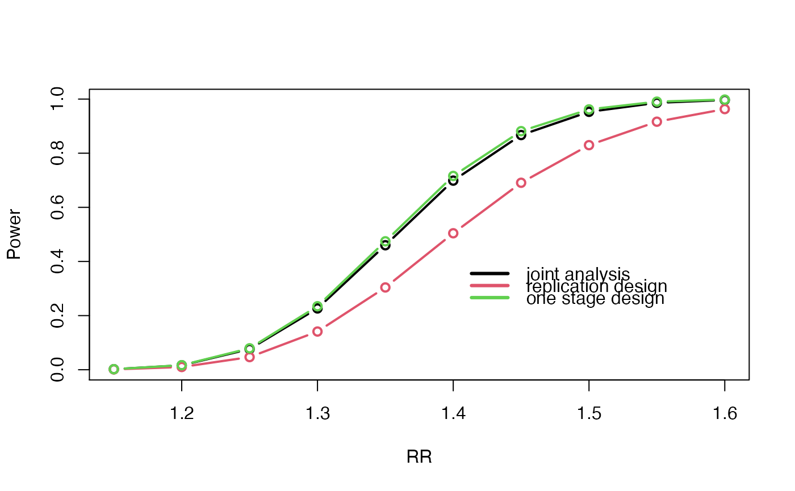

R/cats.R
cats.RdPower calculation for a joint analysis of a two-stage case control design for SNP data.
cats( freq = 0.5, freq2 = -1, ncases = 500, ncontrols = 500, ncases2 = 500, ncontrols2 = 500, risk = 1.5, risk2 = -1, pisamples = -1, prevalence = 0.1, prevalence2 = -1, additive = 0, recessive = 0, dominant = 0, multiplicative = 1, alpha = 1e-07, pimarkers = 0.00316 )
| freq | numeric. The minor allele frequency (MAF) in the first stage |
|---|---|
| freq2 | numeric. The MAF in the second stage, Optional, if -1 the same value as for the first stage is given |
| ncases | integer. The number of cases in the first stage |
| ncontrols | integer. The number of controls in the first stage |
| ncases2 | integer. The number of cases in the second stage |
| ncontrols2 | integer. The number of controls in the second stage |
| risk | numeric. The relative risk in the first stage |
| risk2 | numeric. The relative risk in the second stage, Optional, if -1 the same value as for the first stage is given |
| pisamples | numeric. The weights used for the joint statistic. Optional. see details |
| prevalence | numeric. The prevalence of the disease in the population for the first stage |
| prevalence2 | numeric. The prevalence of the disease in the population for the second stag, Optional, if -1 the same value as for the first stage is given |
| additive | boolean. if 1 an additive model is assumed |
| recessive | boolean. if 1 a recessive model is assumed |
| dominant | boolean. if 1 a dominant model is assumed |
| multiplicative | boolean. if 1 a multiplicative model is assumed |
| alpha | numeric. The significance threshold. Often the a threshold of 0.05 divided by the number of markers is chosen |
| pimarkers | numeric. The fraction of markers genotyped in the second stage |
The power if only one study was performed, NB! This is only a valid estimate if the relative risk and allele frequency is the same for both stages
The power for a marker to proceed the the second stage
The power of the study if based on replication and not a joint analysis
The power of the joint analysis tp detect at least one susceptibility SNP assuming that five susceptibility SNPs exits
The power of the joint analysis
The weight used to calculate the joint statistic
Recommended thresholds for a one-stage study
Recommended thresholds for the first stage in two-stage study
Recommended thresholds for the second stage in replication analysis
Recommended thresholds for the second stage in a joint analysis
The expected disease allele frequency in stage 1 for cases
The expected disease allele frequency in stage 1 for controls
The expected disease allele frequency in stage 2 for cases
The expected disease allele frequency in stage 2 for controls
These power analysis are based on Skol et al. 2006, But are generized so that the ratio between cases and controls may vary between stages. Also the allele frequencies, disease prevalence and relative risk are also allowed to vary. The joint statistic $z_joint=z_1\sqrt\pi+z_2\sqrt1-\pi$ where $z_1$ is the z-score for the first stage and the weight $\pi$ is calculated as $\pi=1/var(\hatp'_1-\hatp_1)*(1/var(\hatp'_1-\hatp_1)+1/var(\hatp'_2-\hatp_2))^-1$, where $\hatp'_1$ is the estimate of the allele frequency of the cases in the first stage. This is consistent with Skol et al 2006 when the ratios of cases and controls are the same in both stages. When this is not the case the weight $\pi$ may vary slightly with different allele frequencies and different relative risks. For power calculations I would recommend calculating the weight at a likely scenario where there is about 80-90% power and fixing the weights at other scenarios (and the testing of the real data) to this weight. This can be done by assigning pisample to a value. In practice this will hardly affect the power.
Skol AD, Scott LJ, Abecasis GR, Boehnke M: Joint analysis is more efficient than replication-based analysis for two-stage genome-wide association studies. Nat Genet 38: 209-213, 2006.
Anders Albrechtsen
# calculate the power under a multiplicative model using a two stage design # and assuming a relative risk of 1.5 cats( freq = 0.2, ncases = 500, ncases2 = 500, ncontrols = 1000, ncontrols2 = 1000, risk = 1.5, multiplicative = 1 )#> Expected Power is; #> #> #> #> For a one-stage study = 0.94 #> For first stage in two-stage study = 0.972 #> For second stage in replication analysis = 0.784 #> For second stage in a joint analysis = 0.929 #> pi = 0.5 #>power.J <- c() power.R <- c() power.O <- c() RR <- 23:32 / 20 for (tal in 1:length(RR)) { temp <- cats(risk = RR[tal]) power.J[tal] <- temp$P.joint power.R[tal] <- temp$P.rep.study power.O[tal] <- temp$P.one.study } plot(RR, power.J, type = "b", lwd = 2, ylab = "Power")legend(1.4, 0.4, c( "joint analysis", "replication design", "one stage design" ), col = 1:3, lwd = 3, bty = "n")